eCommerce
Dashboard
A complete redesign of the seller management portal — bringing 12 screens, a unified design system, and zero friction to thousands of sellers tracking their earnings and sales.
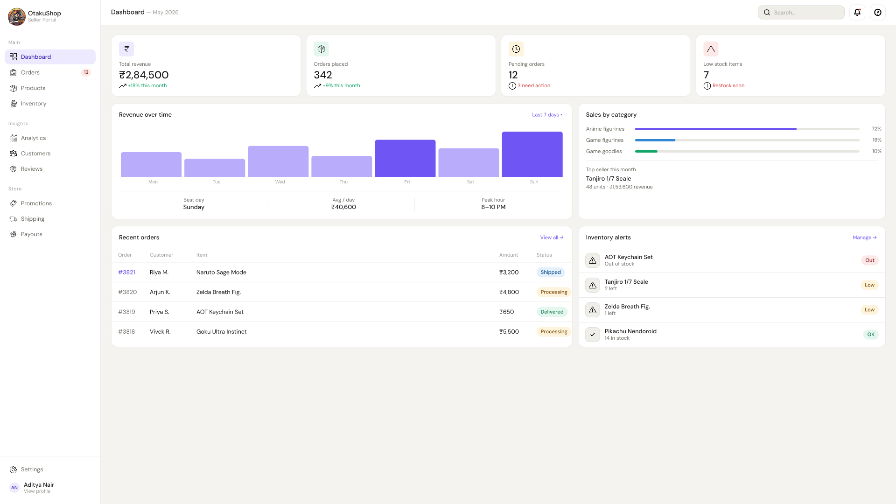
What is OtakuShop?
OtakuShop is a niche marketplace dedicated to anime merchandise — from figures and apparel to collectibles. Sellers range from solo creators to small studios, all managing inventory, orders, and payouts through a single portal. This project focused on redesigning that seller portal end-to-end, giving sellers real visibility into their business for the first time.
Track Earnings
Give sellers real-time visibility into revenue, payouts, and sales trends — without digging through spreadsheets.
Manage Orders
A centralised order view that surfaces what needs action right now — pending shipments, returns, and disputes in one place.
Grow the Store
Analytics that are actually legible — product performance, buyer breakdowns, and inventory health in a single dashboard.
The Dashboard
The centrepiece of the portal. Sellers land here after login and get an immediate pulse on their business — revenue this month, pending orders, top products, and store health at a glance.
What sellers were dealing with
Before this redesign, sellers described the old portal as "a mess of tabs." Research interviews and support tickets revealed two consistent pain clusters that drove churn.
No visibility into their own business
The old portal had no analytics. Sellers couldn't see which products were selling, what their revenue trends looked like, or when they'd receive their next payout. Everything was a guessing game.
Inventory updates were a 48-hour process
Updating stock levels required emailing a CSV file to the support team. This caused 48-hour delays, frequent overselling, and angry customers. Sellers had zero real-time control.
Sellers check in, they don't camp
Interviews revealed most sellers open the portal 2–3× daily for under 5 minutes each visit. The design needed to surface the most critical actions immediately — not an exhaustive overview to scroll through.
Trust is built through transparency
Sellers who'd left for competitor platforms cited "not knowing where my money was" as the top reason. Clear, real-time payout tracking was as important as revenue data for retaining sellers.
How the design came to be
A five-stage process from discovery to handoff — each stage building directly on evidence from the last.
Discovery & Research
I started my research by talking to a few friends who run their own small online businesses, asking them how they manage their income, track orders, and handle daily operations. I paired this with some secondary desk research, reading through seller forums online. A clear pattern quickly emerged: trying to track revenue and manage inventory across scattered tools was a huge, universal headache.
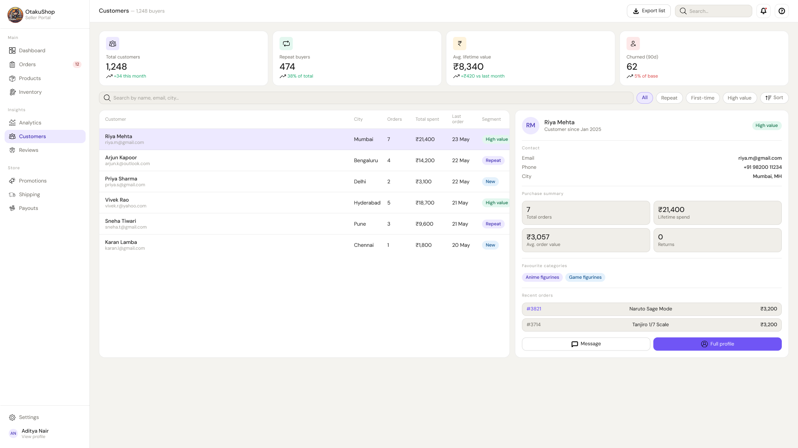
Information Architecture
Based on those early conversations, I realized sellers didn't think in terms of abstract "system features" — they thought in terms of daily tasks (like "what do I need to ship today?" or "how much did I make?"). I sketched out a rough sitemap that organized the dashboard around these core user goals rather than just listing out tools, making the navigation instantly more intuitive.
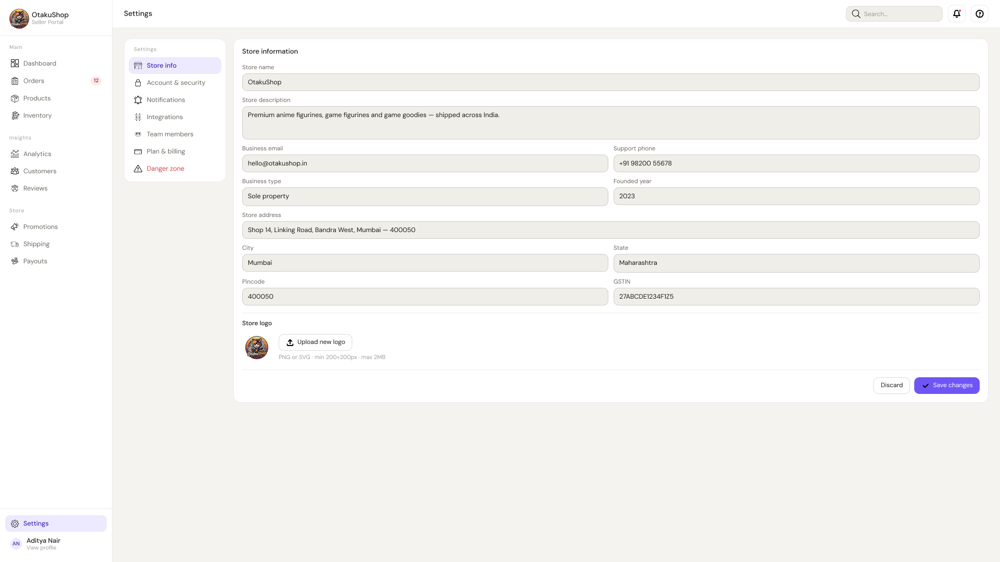
Key Flows
Mapped five critical seller flows end-to-end: list a product, fulfil an order, check revenue, respond to a review, and initiate a payout. Each flow was tested as a low-fidelity clickthrough with 5 sellers before any visual design started.
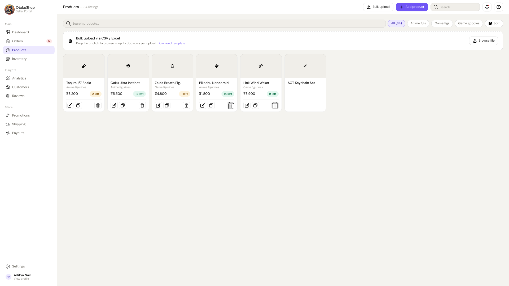
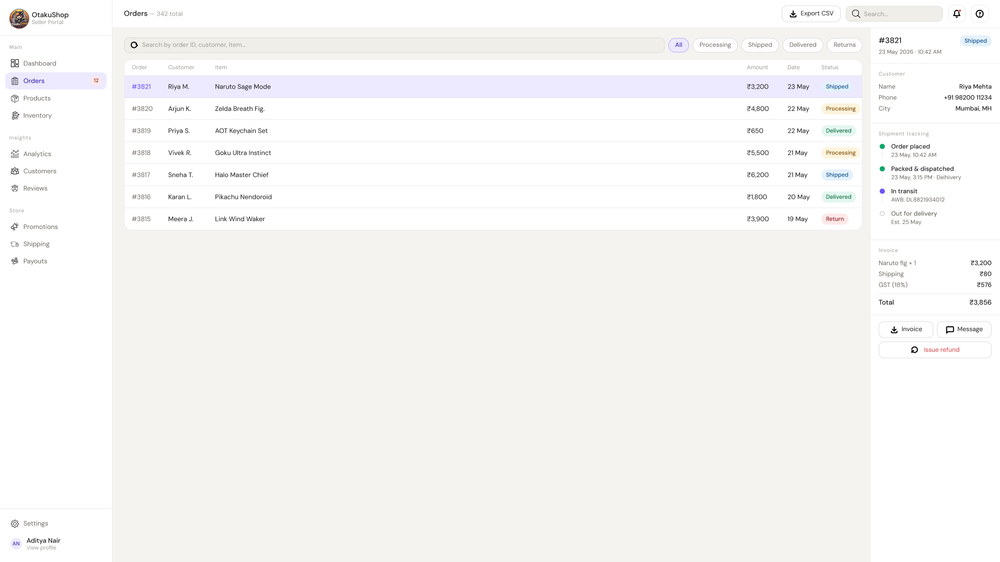
Component System
Assembled a 40-component library covering buttons, inputs, data tables, badges, cards, and charts — all with multiple states. Built in Figma with auto-layout and shared variables so any screen could be composed quickly and stay visually consistent across the 12 screens.
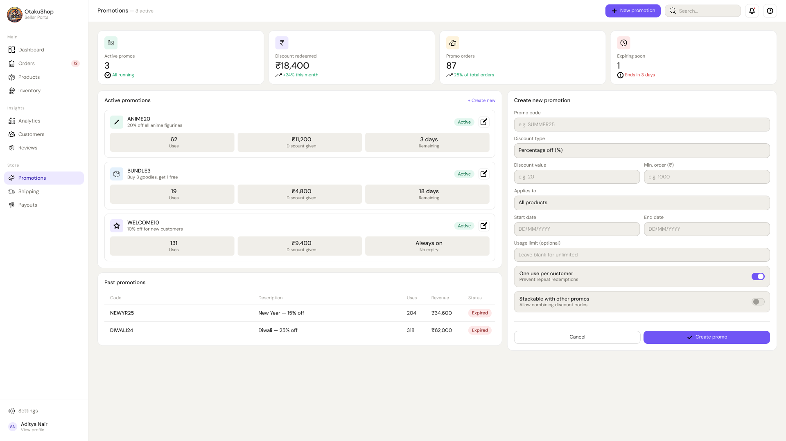
Reviews & Refinement
Ran two rounds of moderated usability testing with high-fidelity prototypes — 6 sellers per round. Round 1 revealed friction in the product listing flow and payout initiation. Round 2 validated the redesigned versions with a 100% task completion rate across both flows.
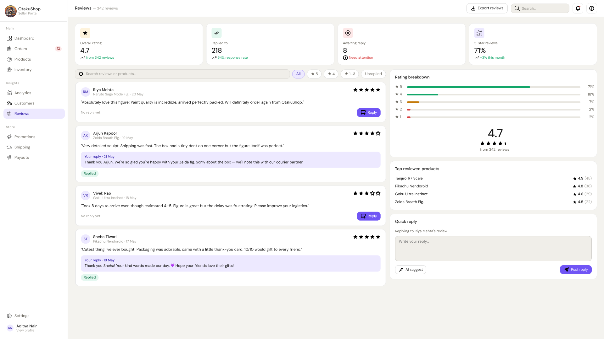
Screens that do the work
Four screen highlights covering the most critical seller touchpoints — inventory control, shipping, analytics, and payouts.
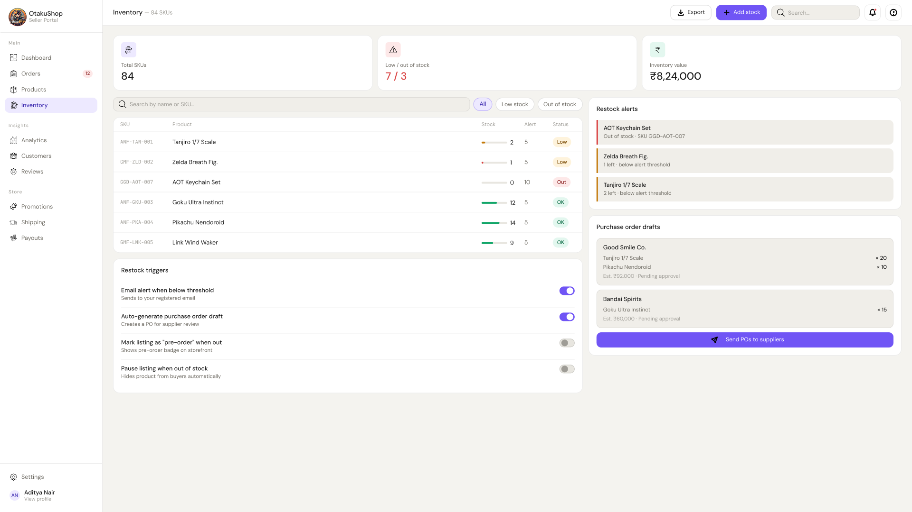
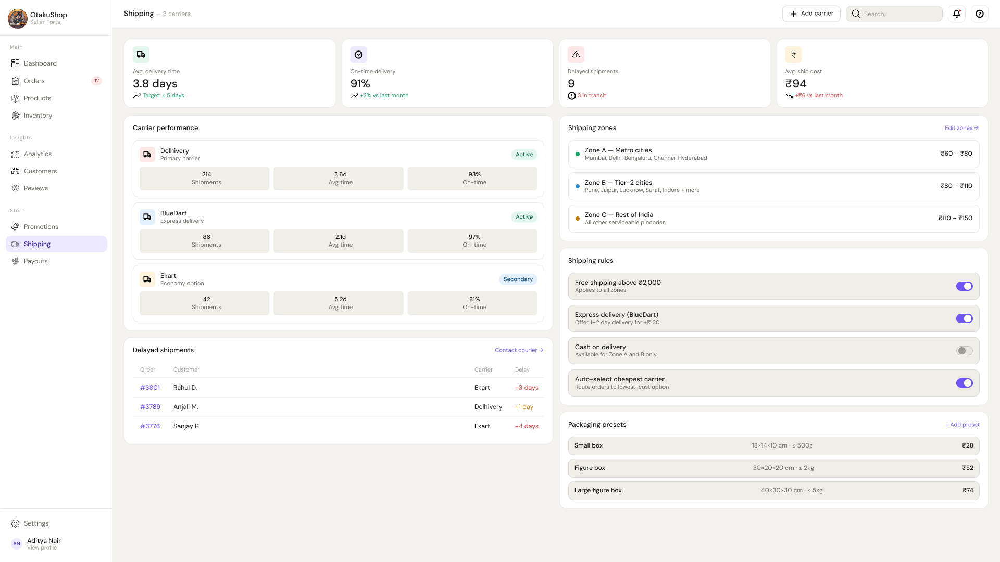
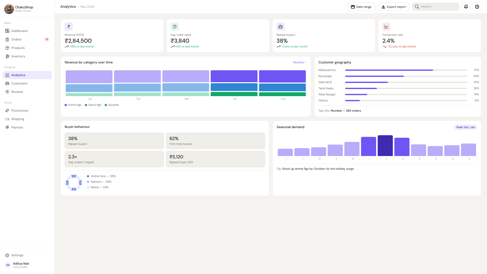
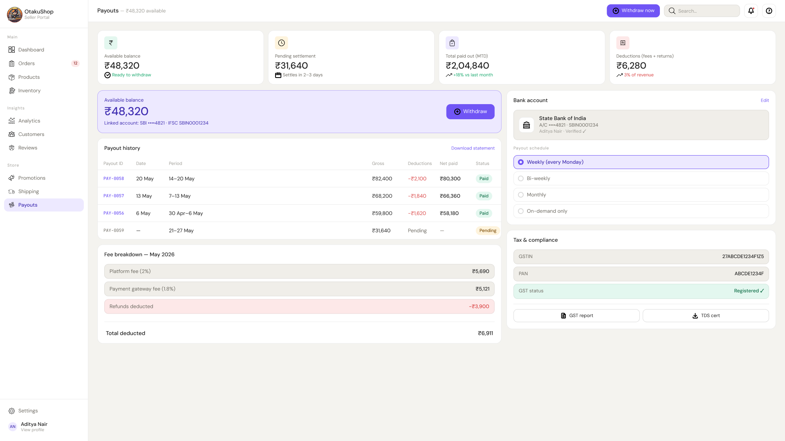
Every screen, at a glance
The complete set of 12 designed screens covering every seller touchpoint. Click any screen to view it in full.
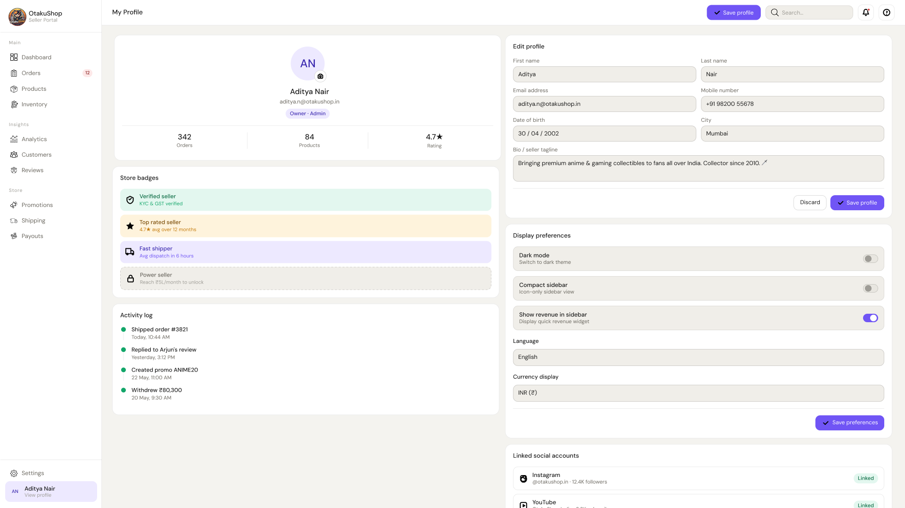
Colour, type, space
A restrained, purposeful system built on an indigo palette — credible and calm for a financial tool, without the grey sterility of enterprise SaaS. Semantic colour (green = healthy, amber = warning, rose = urgent) lets sellers read the page without reading it.
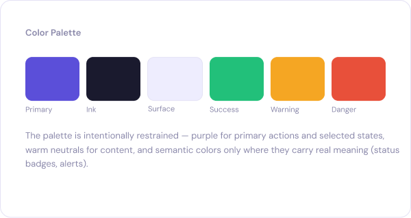
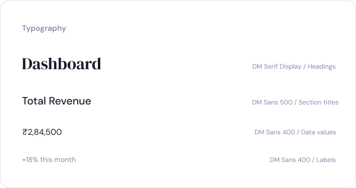
What I learned
Six things this project changed about how I approach dashboard design for data-heavy products.
Design for the check-in, not the deep dive
Most dashboard users are on their third visit of the day, not their first. Optimise for the 90-second check rather than the 20-minute audit — it forces a sharper information hierarchy.
Link insights directly to actions
Data without a clear next step is just anxiety. Every metric on the dashboard now has a direct action link — reorder stock, reply to review, initiate payout.
Card sorting will surprise you
I assumed sellers think in terms of entities (products, orders). They think in terms of jobs (what do I need to ship today?). The nav restructure was the single highest-impact change.
Build the system before the screens
Spending two extra days on the component library saved a week of inconsistency fixes. Every screen composed faster and felt coherent without additional effort.
Colour as information, not decoration
Semantic colour (green = healthy, amber = attention, rose = urgent) reduced cognitive load on every screen. Sellers could read the page without reading it.
Test early, then test again
The first usability round broke assumptions I'd held since day one. The second round confirmed the fixes worked. Two rounds is the minimum for any consequential flow.